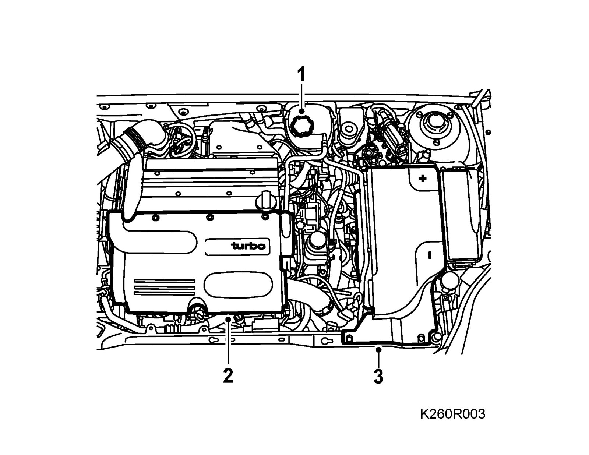
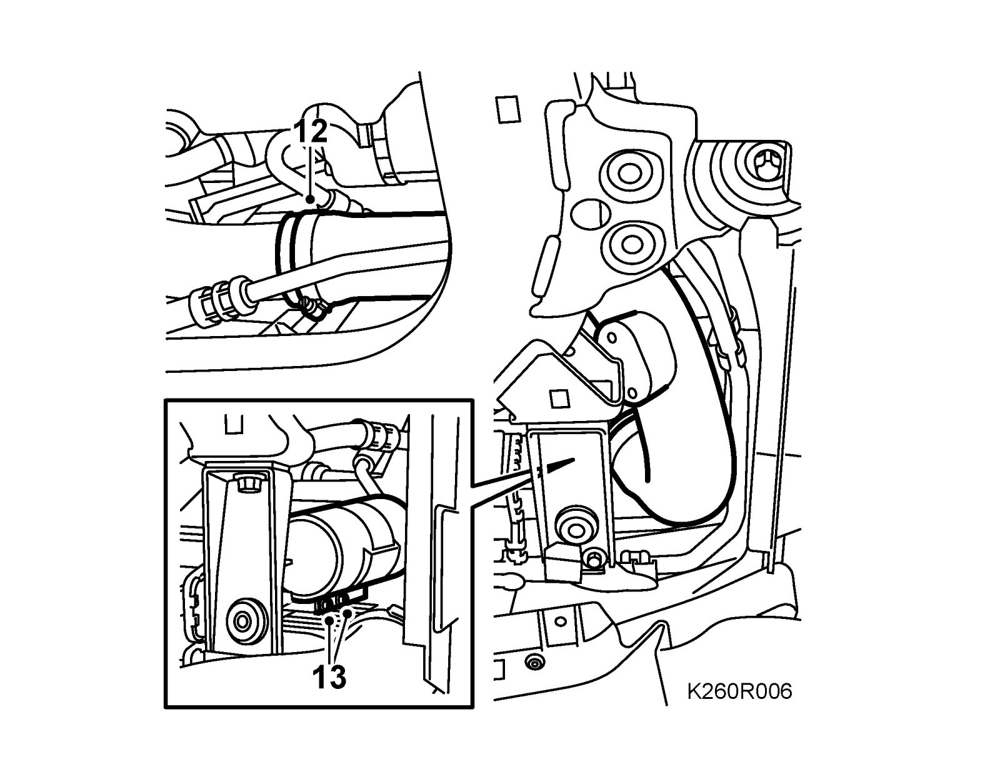
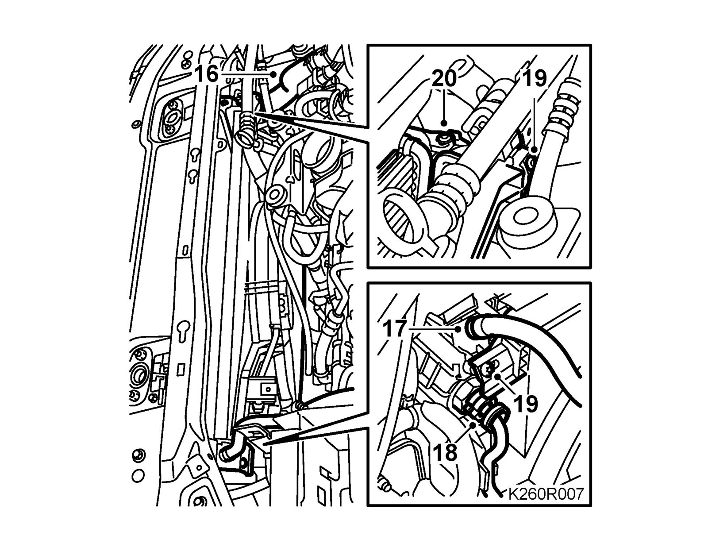
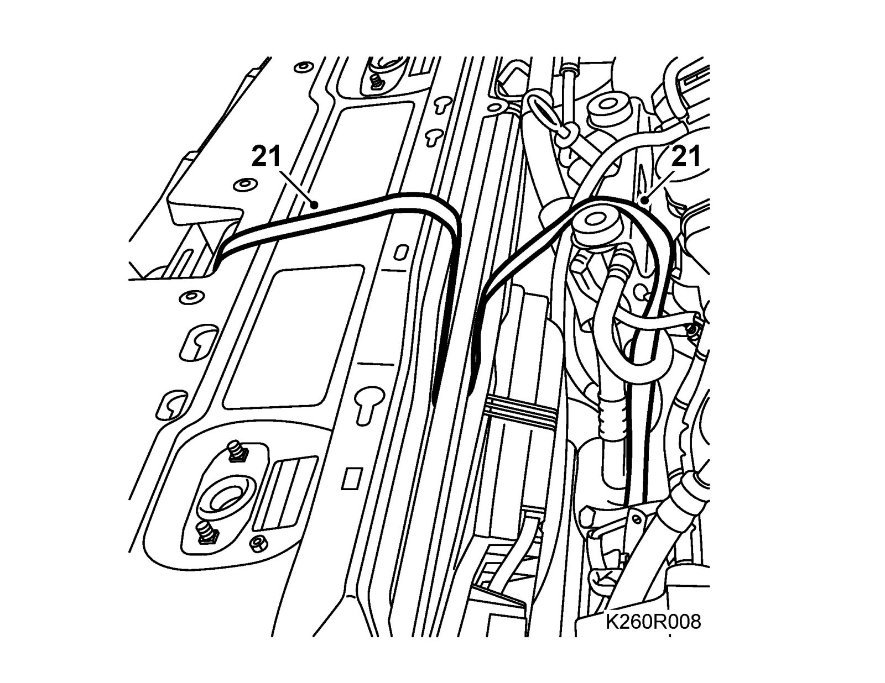
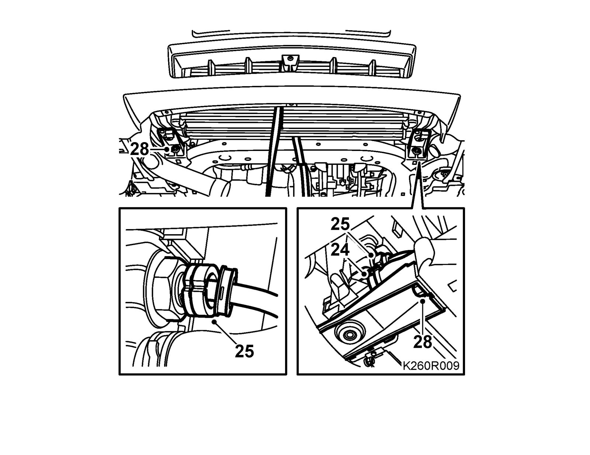
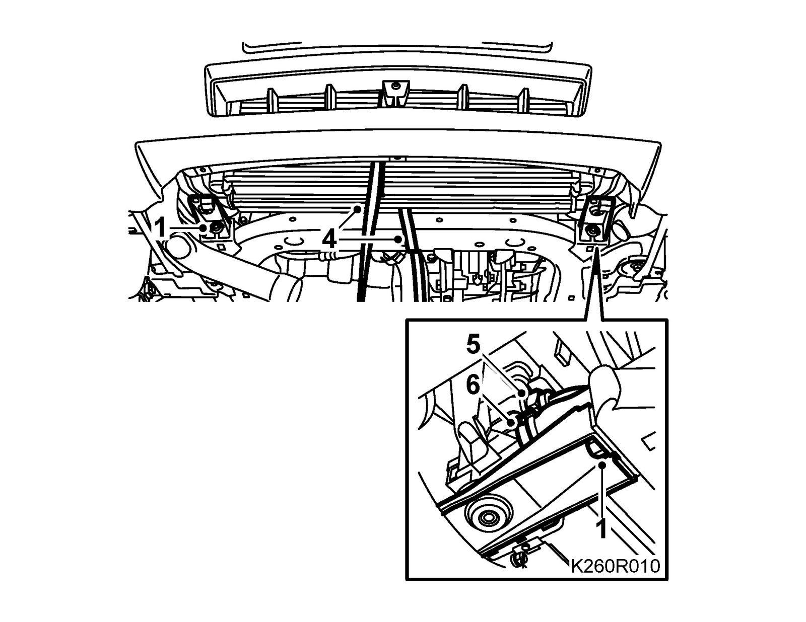
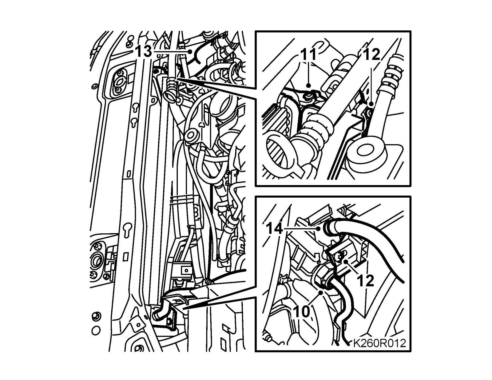
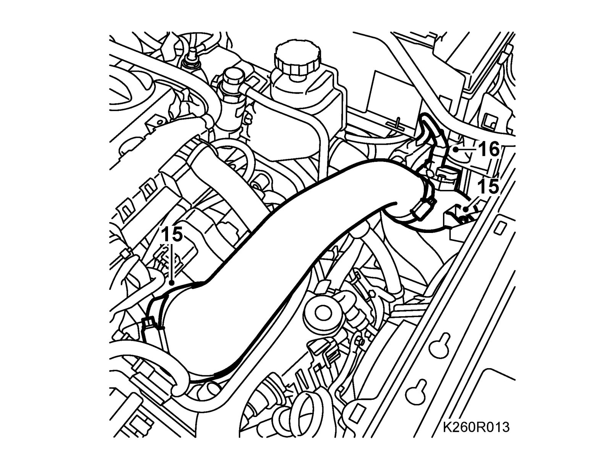
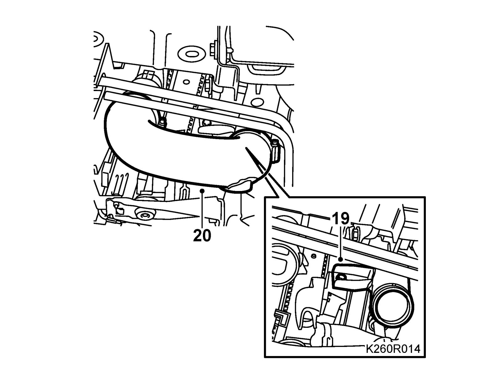
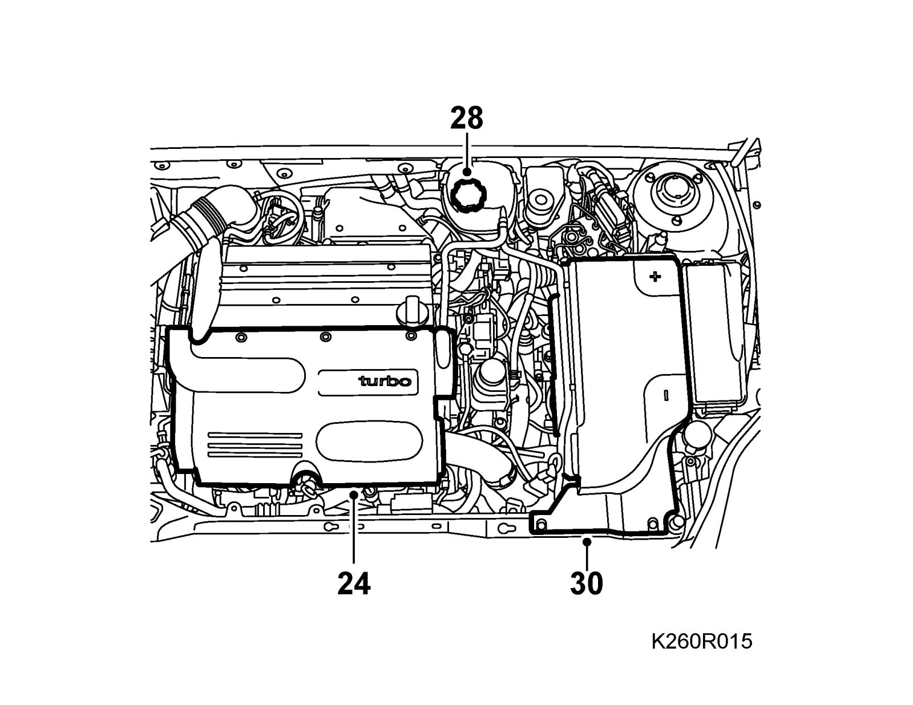

Radiator, B207
Radiator, B207To remove
Warning
The cooling system is under pressure. Hot coolant and steam can escape.
- Open the cap slowly to release the pressure.
- Carelessness can cause eye and burn injuries
1. Undo the expansion tank cap and release the pressure.

2. Remove the upper engine cover.
3. Remove the battery cover and release the cables from the battery.
4. Remove the battery cooling pipe and release it from its catch.
5. Disconnect the charge air pipe from the throttle body and the pipe's upper mounting from the fan cowling.
6. Release the connector and hose from the pressure/temperature sensor on the charge air pipe.
7. Raise the car.
8. Remove the Spoiler shield, front.
9. Place a receptacle under the car, connect a hose and drain the cooling system.
10. Detach the charge air hose from the charge air pipe on the left side.
11. Remove the lower charge air pipe bracket from the fan cowling.
12. Detach the charge air hose from the charge air pipe on the right side. Move the hose aside.

13. Remove the drier filter bolts from the radiator.
14. Lower the car.
15. Lift away the intake manifold with hose.
16. Remove the upper radiator hose from the radiator.

17. Detach the expansion tank hose.
18. Aut: Remove the dust excluder of the upper pipe. Turn 87 92 806 Removal tool, oil pipe, automatic transmission slightly and remove the upper connection. At the same time, remove the pipe from the clip.
19. Remove the upper fan cowling bolts.
20. Remove the upper bolts - charge air cooler - radiator
21. Insert two 83 95 212 Straps to suspend the fan cowling and charge air cooler together with the condenser.

22. Raise the car.
23. Tighten the 83 95 212 Straps.
24. Remove the lower radiator connection.

25. Aut: Remove the dust excluder and pipe from the oil cooler using 87 92 806 Removal tool, oil pipe, automatic transmission.
26. Unhook the charge air cooler and condenser from the radiator.
27. Unhook the fan cowling from the radiator.
28. Remove the lower radiator mounting from the subframe.
29. Carefully lower the radiator.
To fit
Upon radiator replacement: Transfer the upper rubber pads to the new radiator.
1. Raise the radiator, making sure its upper rubber pads end up in their mountings. Fit the lower radiator support against the subframe.
Tightening torque 47 Nm (35 lbf ft)
2. Check that the radiator and charge air cooler are connected.
Important
Make sure the lower catches of the fan cowling go into their mountings. Otherwise, there is a risk that the cooling system could be damaged.
3. Check that the radiator and fan cowling are connected.
4. Remove the straps.

5. Aut: Fit the lower radiator connection between the gearbox and radiator.
6. Attach the lower radiator hose between the radiator and cylinder block.
7. Fit the screws to the drier filter.
8. Attach the right hose to the charge air pipe.
9. Lower the car.
10. Aut: Remove the clip holding the pipes together and fit the upper radiator connection between the gearbox and radiator. Fit the clip.

11. Install the radiator and the charge air cooler.
12. Fit the fan cowling.
13. Attach the upper coolant hose between the radiator and cylinder block.
14. Attach the radiator hose between the radiator and the expansion tank.

15. Attach the pipe to the charge air cooler, but do not tighten yet. Attach the hose between the throttle body and pipe.
16. Plug in the connector of the turbo pressure sensor.
17. Attach the hose to the turbo pressure sensor.
18. Raise the car.

19. Fit the lower charge air pipe to the fan cowling.
20. Attach the lower hose between the throttle body and charge air cooler.
21. Fit the lower section of the spoiler.
22. Lower the car.
23. Tighten the bolt of the charge air pipe to the fan cowling.

24. Fit the upper engine cover.
25. Connect a 30 05 477 Cooling system tester, pump up a pressure of about 1 bar and check the cooling system to ensure the pressure does not drop.
26. Relieve the pressure and remove the cooling system tester.
27. Top up coolant. See Bleeding the cooling system.
28. Fit the expansion tank cap.
29. Fit the battery cooler pipe.
30. Attach the battery cables to the batter and fit the battery cover.
31. Aut: Check the automatic transmission fluid level.
32. If the battery has been disconnected, see Procedure after reconnecting the battery.